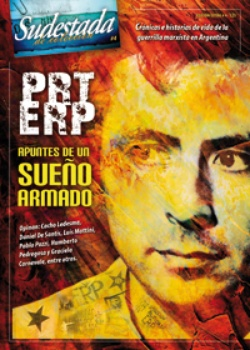

Buscar
Apuntes de un sueño armado I
Antonio del Carmen Fernández, el Negrito, fue uno de cientos de hombres y mujeres del Partido Revolucionario de los Trabajadores-Ejército Revolucionario del Pueblo (PRT-ERP). Sus pasos son símbolo, reflejo y enseñanza de una época. Su historia es una entre miles. Su vida es crónica de una organización política que utilizó la lucha armada como herramienta en busca de un sueño.
Edición Especial N° 4
PRT-ERP (Apuntes de un sueño armado)
Sudestada de Colección
Comprar edición impresaSumario
- Apuntes de un sueño armado II
- Apuntes de un sueño armado I
- Un partido, una historia
- "El PRT-ERP puso sobre la mesa el tema del poder"
- "Santucho confiaba en que la práctica curaba todo"
- Apuntes de un sueño armado III
- "El PRT-ERP tuvo contra las cuerdas a la burguesía"
Compartir Articulo
1. El viento calcinante agitaba apenas el cañaveral. Fue un segundo. Dos siluetas invisibles, un rumor. Después, nada. Para cuando los matones de los Frías Silva volvieron a buscar con la vista movimientos sospechosos, sólo el sonido de las chicharras se distinguía en la plantación. Por las dudas, se mantuvieron alertas, al menos hasta que el rumor de la movilización de cañeros avanzando del lado opuesto del ingenio los obligó a abandonar su lugar. Ya venían... Panza abajo, protegidos por la espesura, las dos siluetas invisibles murmuraban. Ya llegan, es ahora, dijo uno. El otro no dudó, prendió la molotov y, en tres movimientos, se paró y la lanzó con precisión contra el puesto de la guardia. El fuego, en la maloja reseca, explotó. Y comenzó a ganar el cañaveral. Ahora sin cuidados, Robi y el Negrito abandonaron su refugio para salir corriendo hacia la tranquera. Atrás, las lenguas de fuego invadían el ingenio San José. Atrás, los matones de los Frías Silva se dispersaban confusamente ante el ataque por la retaguardia. La multitud de cañeros aprovechó el estallido del fuego para avanzar y ocupar con fiereza el ingenio. En un rato, las siluetas invisibles se sumaban al grupo que tomaba el imperio de los Frías Silva.
Antonio Enrique del Carmen Fernández se llamaba una de las dos siluetas sigilosas que esa tarde incendiaron el cañaveral. El Negrito, le decían, y desde los ocho años había dejado el colegio en segundo grado para incorporarse a la zafra. Hijo único de doña Lucía, sirvienta de los patrones, el Negrito había sido también limpiabotas y, cuando podía, entrenaba para boxeador. Para sus compañeros del ingenio San José, fue con los años erigiéndose en una referencia de lucha durante la oleada de huelgas en la industria azucarera, a principios de los sesenta, en Tucumán. Escuchaba, en silencio y con respeto, el relato de los viejos cañeros que en los cuarenta habían protagonizado una huelga grande que duró 45 días por el cierre de unos seis ingenios, con policía, ejército y muertos incluidos. Muchos años después, cuando ya había aprendido a leer y escribir, el Negrito se encargaría de poner sobre papel los detalles del régimen de explotación extrema al que eran sometidos: "Esto es lo que recordaba la gente vieja: decían que se los trataba como animales, y que no los amparaba ninguna ley de trabajo; decían que en la fábrica se trabajaba 16 horas por día; recordaban que en un tiempo les daban de comer en bationes que tenían en la fábrica. Esto lo hacían para ganar más tiempo en la producción, decían que había que andar más rápido, también llegaron a usar el látigo. (...) En el cerco el trabajo es más duro y sacrificado. ¿Por qué? Porque los obreros tenían que levantarse más temprano para ir al surco a las dos o tres de la mañana".
"También decían que cuando un compañero quería que sus hijos aprendan a leer, los patrones trataban de desmoralizarlos, que no pierdan el tiempo, cómo lo iban a estar manteniendo, que lo lleven a trabajar con ellos al cerco; le decían los patrones: ¿acaso vos no te has criado trabajando? El día de mañana se cría y se te manda a mudar a Buenos Aires. ¿Qué remediás? Algunos les contestaban que ya que ellos no habían tenido esa suerte de aprender a leer que la tengan sus hijos para que el día de mañana sepan defenderse. Esto no le gustaba a los patrones", contaba el Negrito.
También escuchaba el Negrito el relato de los zafreros cuando se referían al "Familiar". En ese momento, bajaban la voz, cuchicheaban casi el acuerdo entre aquel monstruo que se aparecía por las noches y los patrones, que lo contrataban para sacarse de encima laburantes rebeldes: "Los patrones tenían un poder muy grande, un contrato con el 'Familiar' que era hijo del Diablo, lo que pasaba era que cuando un obrero quería organizar algo con el conjunto para protestar por las injusticias decían que la patronal lo hacía citar a una hora determinada de la noche y los patrones agarraban, lo mataban y después la respuesta que le daban a la gente, le decían que el 'Familiar' lo había llevado porque había protestado y le faltó el respeto al patrón. De esa manera conseguían que la gente no se organizara y que tenga un pánico espantoso. Compañeros, les aclaro que la gente todavía es creyente en estas cosas, en el asunto de brujos y de demonios, en la zona montañosa. Todo esto les debe dar una idea de que no era fácil organizar a los compañeros"...
(La nota completa en la edición Sudestada de colección # 4 PRT-ERP)
Comentarios
Hugo Montero
Articulos más vistos


LIBRERÍA SUDESTADA

Colección infantil

Distribuidora de Libros

Suscripción

Sudestada en URUGUAY

Otros articulos de esta edición
 Entrevista con Pablo Pozzi
Entrevista con Pablo Pozzi
"El PRT-ERP puso sobre la mesa el tema del poder"
"Fue una organización que planteó la combinación de múltiples formas de lucha para la toma del poder -entre las cuales, ...
 Entrevista con Luis Mattini
Entrevista con Luis Mattini
"Santucho confiaba en que la práctica curaba todo"
Esa ambivalencia entre profundidad y fuga en su mirada me desconcertaba. Nunca pude determinar si era una manifestación de timidez ...
"El PRT-ERP tuvo contra las cuerdas a la burguesía"
Protagonista incansable de cuanta polémica se desata hoy alrededor del PRT-ERP, Daniel De Santis también fue el responsable de publicar ...
Apuntes de un sueño armado III
Esta es la historia de Lionel MacDonald, o Pasto Seco, o Capitán Raúl. Referente estudiantil en Santa Fe, Lionel caminó ...
 (Segunda parte)
(Segunda parte)
Apuntes de un sueño armado II
De la práctica de Santucho recorriendo cada regional en 1972 hasta las represalias de 1974. Crónicas olvidadas del tiempo urgente ...
Un partido, una historia
¿Cómo rastrear hoy la huella de una organización revolucionaria, de una guerrilla marxista, sino en la impronta de un tiempo ...